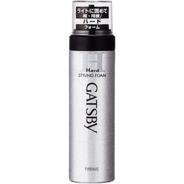

返回列表
产品名称：ギャツビー スタイリングフォーム ハード

マンダム ギャツビー スタイリングフォーム ハード １８５ｇ
メーカー マンダム
JANコード 4902806583137
商品の特徴
ベタつかず自然な感じにしっかりセット。
- 成分・分量
- 水、エタノール、ＬＰＧ、（アクリル酸アルキル／ジアセトンアクリルアミド）コポリマーＡＭＰ、グリセリン、ＰＥＧ-４、ミネラルオイル、セテス-１５、（Ｃ１２-１４）パレス-３、パンテノール、ステアリン酸ソルビタン、ステアルトリモニウムクロリド、メチルパラベン、ブチルパラベン、香料
- 用法及び用量
- ○上向きで使うとガスだけが出て中味が残ります○乾いた後に髪にブラシ等を通すと 白い粉が出ることがあるので避けてください○低温下 泡になりにくいときは ぬるま湯につけてからお使いください